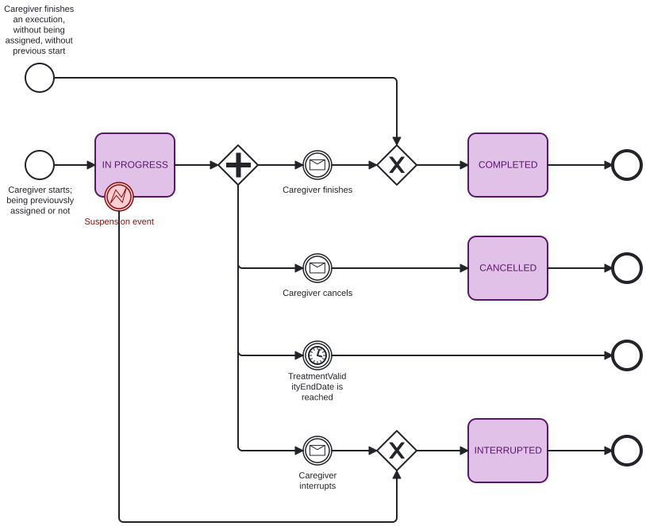
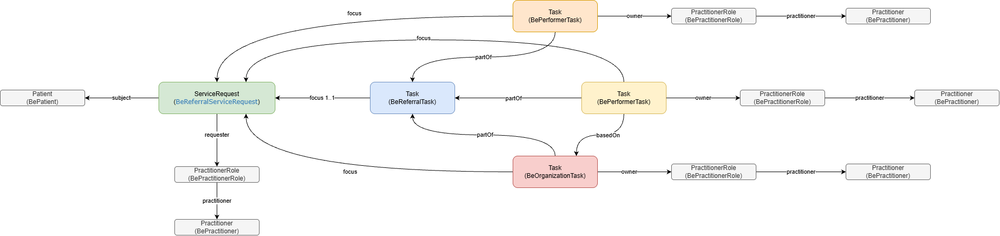

eReferral Implementation Guide
3.0.0 -

eReferral Implementation Guide
3.0.0 -

eReferral Implementation Guide - Local Development build (v3.0.0) built by the FHIR (HL7® FHIR® Standard) Build Tools. See the Directory of published versions
This page describes the lifecycle of an eReferral prescription: how business statuses map to the
FHIR statuses of the resources that represent a prescription, the state flows for the prescription
and for a performer execution, and how the Task resources link back to the ServiceRequest.
Business statuses are used throughout the operation pages to stay aligned with the business requirements and to avoid repeating the value of each underlying FHIR field.
A Belgian referral prescription is represented by a ServiceRequest (profiled as
eReferralServiceRequestNursing, eReferralAnnex81, or
eReferralServiceRequestDiagnosticImaging).
BeReferralTask is always created together with the prescription. It has the same logical
ID as the ServiceRequest and references it through Task.focus. It can be read with
GET /Task/{id}.BePractitionerRole and BePractitioner resources are also made
available for consultation (see API Integration).The model separates the clinical request itself from the workflow tracking required to coordinate the healthcare professionals and organizations involved in the execution of the prescription.
| Resource | Role |
|---|---|
| ServiceRequest | Represents the prescription itself (the clinical order). |
| ReferralTask | Tracks the overall processing of the prescription across all assigned actors. |
| PerformerTask | Represents the assignment and progress of a healthcare professional responsible for executing the prescription. |
| OrganizationTask | Represents the assignment of an organization responsible for executing the prescription. |
The ServiceRequest represents the prescription created by the prescriber. It contains the clinical intent, the requested service, the patient, and contextual information required to perform the care, and it remains the single source of truth for the prescription.
The ReferralTask tracks the global workflow of the prescription. Several healthcare professionals or organizations may participate in the execution of a prescription; the ReferralTask aggregates the state of the workflow and represents the overall status of the prescription processing. Its status is derived from the status of the tasks assigned to performers or organizations.
A PerformerTask represents the involvement of a specific healthcare professional in the prescription workflow: assignment of the prescription to a practitioner, progress of the work performed, and completion or cancellation of the task. Multiple PerformerTasks may exist if several professionals are involved in the care process.
An OrganizationTask represents the involvement of a healthcare organization responsible for
performing the prescription, used when the prescription is handled at the organizational level
rather than directly by an individual practitioner. An organization may assign the work internally
to one or more healthcare professionals; internal healthcare professionals are identifiable via a
basedOn reference to the OrganizationTask in the PerformerTask.

Separating the prescription (ServiceRequest) from workflow tracking (Task) provides several
advantages:
This structure aligns with the FHIR workflow pattern and allows flexible orchestration of healthcare activities.
Every business status maps to a combination of ServiceRequest.status,
ServiceRequest.statusReason, and BeReferralTask.status:
| Business status | ServiceRequest.status |
ServiceRequest.statusReason |
BeReferralTask.status |
|---|---|---|---|
| Draft | draft |
/ | draft |
| Blacklisted | entered-in-error |
/ | entered-in-error |
| Pending | active |
/ | draft |
| Ready | active |
/ | ready |
| Canceled | revoked |
cancelingReason |
cancelled |
| Expired | revoked |
expired |
cancelled |
| In Progress | active |
/ | in-progress |
| Inactive | active |
/ | on-hold |
| Completed | completed |
/ | in-progress / completed |
When translating a business status into a search filter, the FHIR status values above must be used (see the search filters in API Operations).

The prescription moves from Pending to Ready when its ValidityStartDate is reached, and
becomes In Progress once a caregiver starts an execution. It ends as Completed when the
TreatmentValidityEndDate is reached, or as Canceled, Expired, or Blacklisted
depending on cancellation, validity expiry, or prescriber suspension.
Clinical data in the ServiceRequest is fixed once created by the prescriber and must not change
afterward. Caregiver interactions are handled through the BePerformerTask resource:
BePerformerTask.focus references the ServiceRequest.BePerformerTask.partOf references the BeReferralTask.BeOrganizationTask stores an organization assignation on a prescription.BePerformerTask is linked to the
BeOrganizationTask through basedOn.A BePerformerTask can be created in three cases:
After creation, all further updates are done with the FHIR PATCH operation.
| Business status | BePerformerTask.status |
|---|---|
| Ready | ready |
| In Progress | in-progress |
| Canceled | cancelled |
| Interrupted | on-hold |
| Completed | completed |
Once a BePerformerTask.status is on-hold or completed, the resource can no longer be updated.

A prescription is composed of several resources. The recommended way to retrieve them in one call
is the $graph operation (see Consult or Search Medical Documents).
The example below shows a prescription with three assignments:

| Page | Purpose |
|---|---|
| Proposal Life Cycle | Annex 81 proposal creation, assignment, approval, and rejection. |
| Prescription Extension | How a prescription’s validity period is extended using a new ServiceRequest and ServiceRequest.replaces. |
IG © 2026+ Riziv-Inami Platform.
Package inami.fhir.be.ereferral#3.0.0 based on FHIR 4.0.1.
Generated 2026-10-29